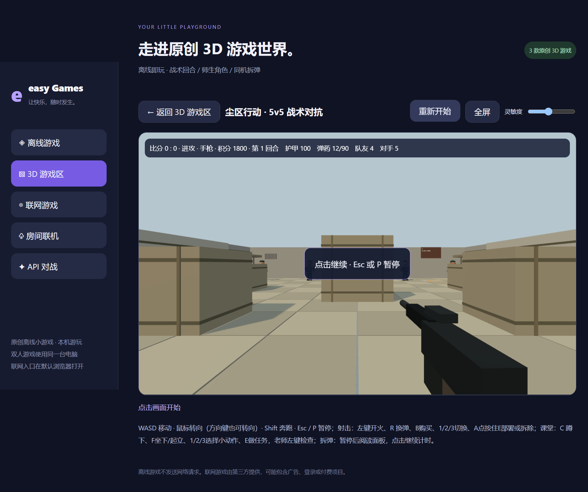

离线随时玩
40 款离线游戏，包含无尽 2D FPS、25 关推箱子、迷宫、塔防、派对和休闲玩法。
给碎片时间一点快乐：离线小游戏、原创 3D、同一服务器房间联机和 API 对战，各有自己的入口。
下载独立安装包 ↓
40 款离线游戏，包含无尽 2D FPS、25 关推箱子、迷宫、塔防、派对和休闲玩法。
尘区行动、课堂风云、蕉急拆弹：分别体验战术回合、师生角色和拆弹解谜。这些是原创小游戏，不是商业原作移植。
同一服务器支持公私房间、六位随机房间码，解散即失效；三人拆弹按观察员、手册员、操作员分工。
适合休闲玩家、同学朋友、本机双人和局域网聚会。想与 AI 下棋或玩回合游戏，可另外配置兼容 API。
安装后进入离线游戏；按游戏画面中的键位说明操作。无须 API。
点击画面锁定鼠标，WASD 移动、鼠标转向，Esc 或 P 暂停；每款游戏有单独说明。
房主启动本机服务器，将局域网地址发给同伴。私人房需输入六位房间码；公开房仅在同一服务器可见。三人拆弹从专用入口加入。
进入 API 对战配置兼容接口，再选择支持的回合游戏。AI 失败会显示错误，不会伪造已联网。
默认安装在 D 盘，可以选择其他目录。更新前请退出当前程序；安装包不包含个人密钥、账号资料或存档。
Windows 7 SP1 / 10 / 11 x64联机依赖房主电脑运行及可达网络；互联网跨网连接需自行配置路由和防火墙，没有全球房间发现服务。
Win7 采用旧版兼容运行时，未在真实 Win7 设备验收。离线区优先使用；联网 API 还受系统 TLS、证书和服务商限制。
积分仅用于本地游戏，没有充值、提现或真实货币交易。3D 游戏不是原作，也不包含商业游戏资源。
GitHub Releases